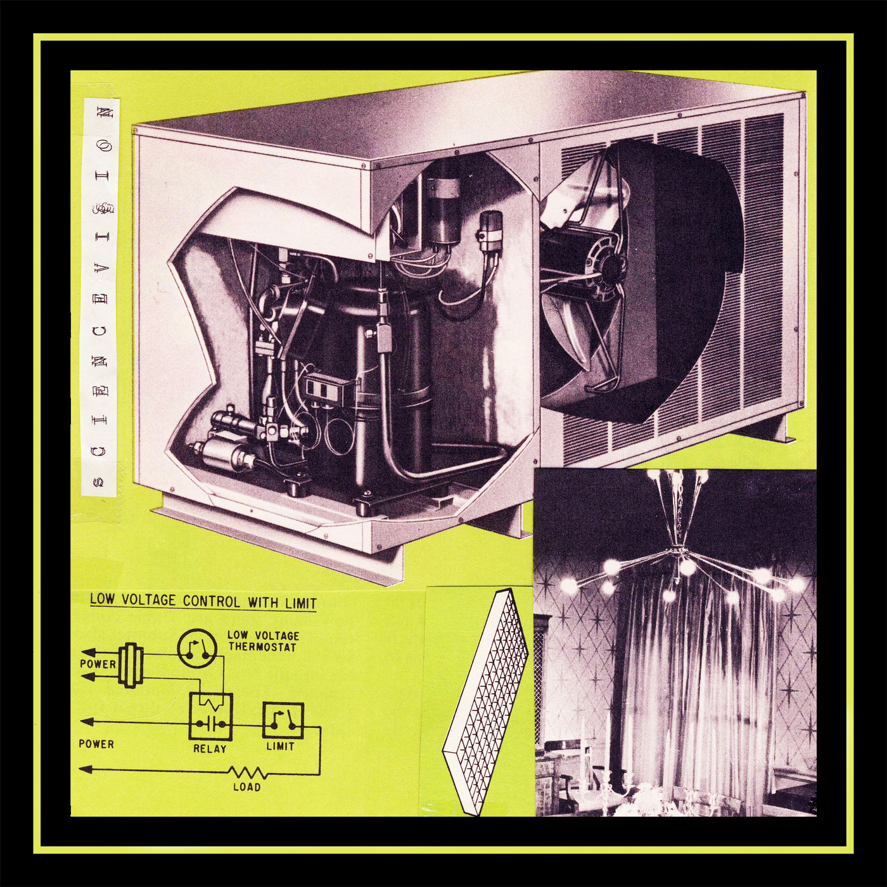

sciencevision - outspace/reminder
catalog: ar-002
year: 2016
format: 3" cd
A short release that was put together while recording States of Vividity. The first two tracks are burnt-out krautrock dreams, while the last track is a sound collage sourced from a single “ELO Greatest Hits” tape. It was created with JB Bowser as a part of a larger mixtape where the source material was cut up and manipulated live. Limited to 15 copies.
1. outspace
2. reminder
3. elo analog cut
2. reminder
3. elo analog cut
*** sold out ***